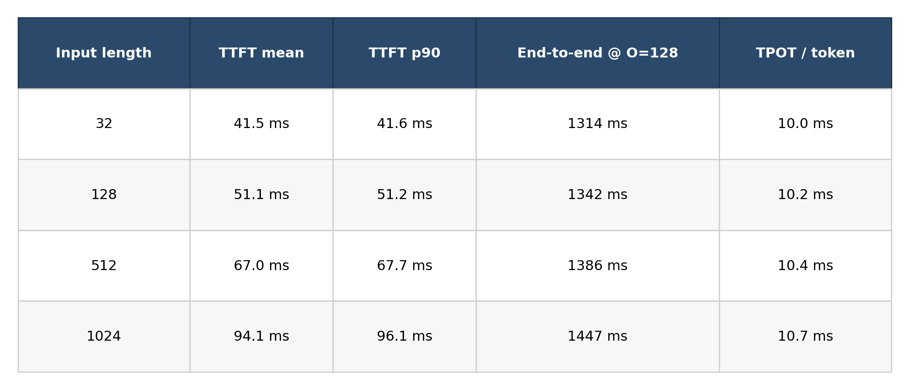
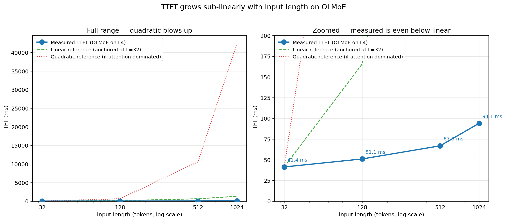
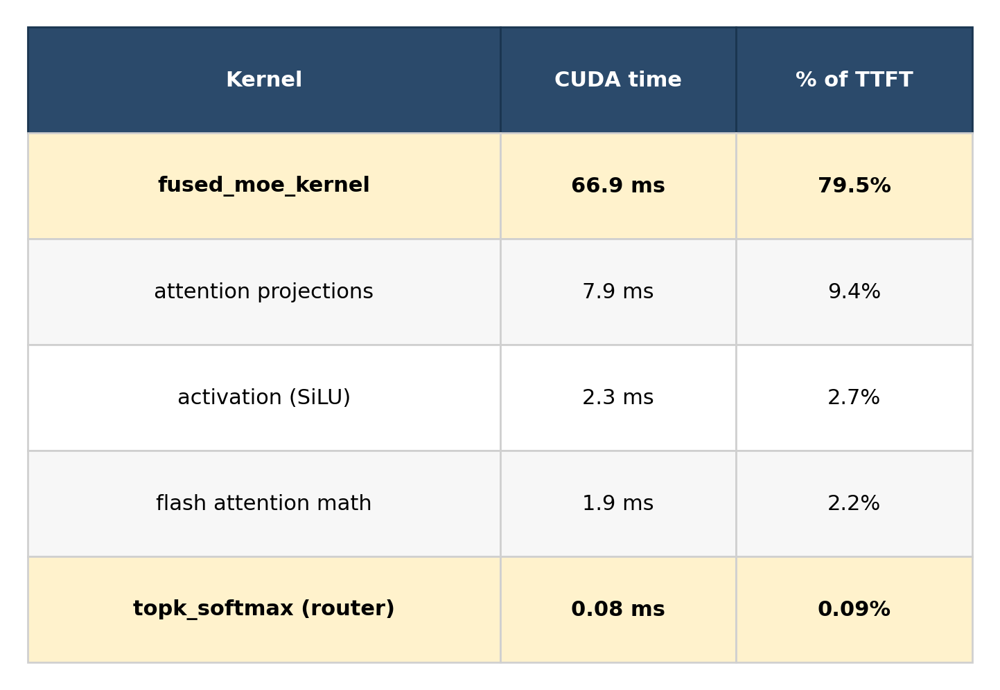
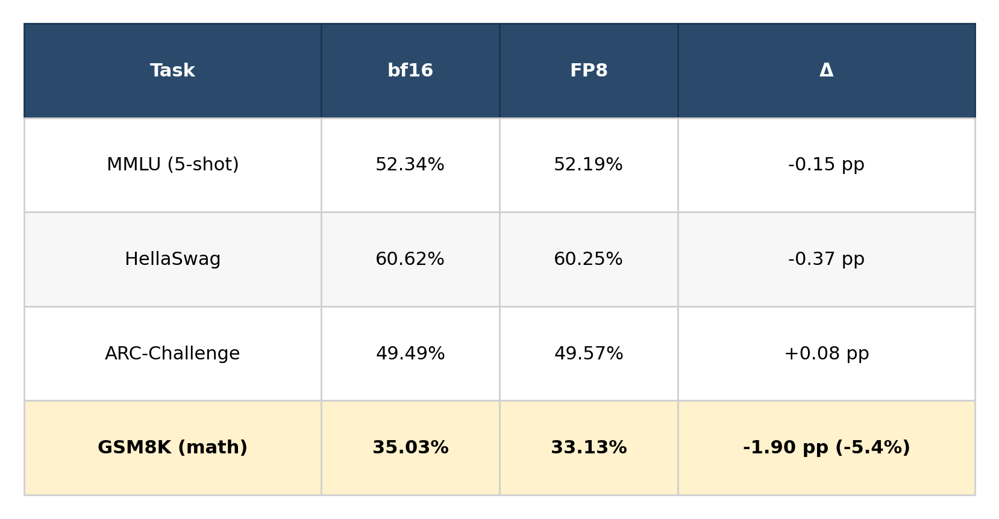
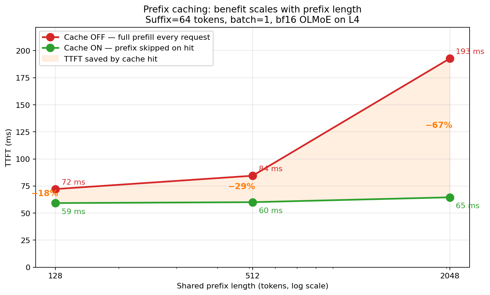
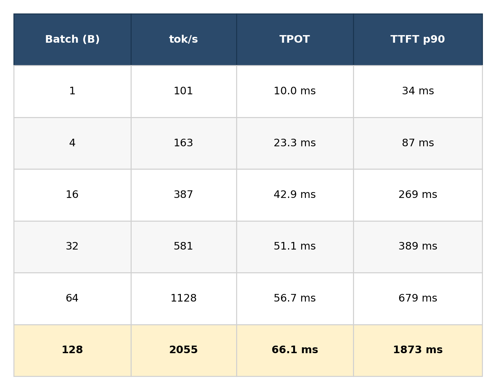

This is a write-up of an experiment I ran over a few days on an ordinary AWS instance — a g6.4xlarge, which is $1.32 an hour and has one NVIDIA L4 GPU. I wanted to take a real open-source language model, ask a simple question about it, and actually answer that question with measurements instead of intuition.
The question was: is it fast?
Specifically: I'm running OLMoE-1B-7B-Instruct on vLLM on one L4. Am I getting good performance? What can I do to make it better?
If you've ever fielded this question from a teammate, you know it's harder than it looks. "Good" relative to what? Better how? There's no crystal ball. There's only measurement, a mental model of what the machine is doing, and a ranked set of things to try.
Here's what the measurements said.
Rule one of performance work: you cannot optimize what you have not measured.
I wrote a small script that calls vllm bench latency across a grid of configurations: input lengths of 32, 128, 512, 1024 tokens, paired with output lengths of 1 and 128 tokens. The output-length-1 runs give me prefill cost alone — what's called TTFT, time to first token. The output-length-128 runs give me prefill-plus-decode. Subtract the two, divide by 127, and I get decode cost per token — TPOT, time per output token.
30 iterations per configuration, 3 warmup iterations discarded, seed pinned at 42 so the synthetic prompts are identical run to run. Here's what fell out:

Three things jumped out, and they set up everything that followed.
First, the variance is tiny. Across 30 iterations, p90 is within one millisecond of the mean. This is the reward for fixing the seed and running enough iterations. It meant any speedup I'd measure later would be a real signal, not noise.
Second, TTFT grows sub-linearly with input length. A 32× growth in input produced only 2.4× growth in prefill time. If you've read transformer papers you know attention is O(N²) — self-attention scales quadratically with input length. If attention dominated prefill, my TTFT curve should bend upward. It wasn't bending. Something else was eating the time.
Third, TPOT is nearly flat. Decode per token grew from 10.0 to 10.7 ms across a 32× input size change — six percent. Whatever's happening during decode, it barely cares how long the prompt was. That's a strong hint that decode has a different bottleneck than prefill.

The red dotted line is what attention-dominated prefill would look like (42 seconds at L=1024). The measured curve (blue) doesn't bend that way. In fact, it sits below even a linear reference.Before I could understand where the time was going, I had to refresh my picture of what OLMoE actually is.
OLMoE is a Mixture-of-Experts transformer. Sixteen identical layers stacked. Each layer does two things: attention (every token looks at prior tokens) and feed-forward (every token passes through a wider representation to think about what the context means). What makes OLMoE different from a dense model is that last part: instead of one feed-forward network per layer, it has 64 experts, and each token picks the best 8 of them at every layer.
That's the MoE trick. 64 experts' worth of capacity for 8 experts' worth of compute per token. OLMoE has 7 billion total parameters but only about 1 billion activate for any given token. It's how modern MoE models like Mixtral, DeepSeek, and GPT-4 are architected.
Now. Why isn't prefill attention-bound?
The answer is one of those math-class moments where the constant factor buries the asymptotic. Every matrix multiplication in a transformer costs 2·m·n·k floating-point operations. At input length N=1024, per layer:
MoE FFN is doing about 9× more FLOPs than attention at N=1024. Yes, attention is quadratic and FFN is linear, but look at the coefficients: 8,192 vs. 67 million. Attention's quadratic term doesn't catch up with MoE FFN's linear term until N is around 8,000 tokens. I was benchmarking at 1,024. I was deep in FFN territory, and FFN was doing most of the work.
That's the first surprise resolved. Attention isn't the bottleneck at these lengths. The textbook was telling me the right story for the wrong regime.
Now decode. Why is TPOT flat?
Decode is a different animal. During decode, we generate one token at a time. Each step has almost no arithmetic — it's one token's worth of multiplies. But the model still has to load all its weights from GPU memory to multiply against that one token.
Think of it as a chef running back and forth to the fridge. On a GPU, the chef is the tensor cores and the fridge is HBM memory. When you're doing prefill with 1024 tokens of work, the tensor cores are fully lit — cook-bound, or compute-bound. When you're doing decode with one token, the tensor cores sit idle waiting for the chef to fetch the next armload of weights. That's fridge-bound, or memory-bandwidth-bound.
The L4 has about 300 GB/s of memory bandwidth. OLMoE at decode has to load roughly 3 GB of active-expert weights per token (only 8 of 64 experts fire per token). Theoretical floor: 3 GB / 300 GB/s = 10 milliseconds per token. I measured 10 ms. The GPU was bandwidth-saturated.
That's the second surprise. Decode doesn't care how long the prompt was because it's not doing prompt-proportional work — it's doing weight-loading work, and the weights are the same size regardless of prompt length.
Two surprises, two different bottlenecks, two different levers.
I had a hypothesis from the math. Now I needed the profiler to confirm it.
I ran vllm bench latency with torch.profiler enabled at the target configuration: input length 1024, single-token output. The profiler captures every CUDA kernel launch, its execution time, and its tensor shapes. Here's the top of the breakdown:

The hypothesis held. FFN dominated, 80% of prefill time was inside a single vLLM kernel called fused_moe_kernel, which fuses expert dispatch, all the grouped expert GEMMs, and the combine step into one launch.
But this is where my original plan died.
My original plan was to write a custom GPU kernel for the softmax + top-K in the router. It seemed like the sweet spot for a learning project: small operation, clean shape, clearly doable. I had the profiler output loaded up, ready to see how much of TTFT the router was responsible for.
Seventy-seven microseconds. Zero-point-zero-nine percent of TTFT. The router wasn't a bottleneck. Even if I wrote a perfect kernel that ran 10× faster, I'd save 0.08% of TTFT. Below measurement noise.
Meanwhile, the real bottleneck — fused_moe_kernel — was an already-heavily-tuned production kernel with tensor-core grouped GEMM inside it. Written by vLLM engineers who know a lot more about CUDA than I do. A solo developer isn't going to out-optimize that in a reasonable timeframe.
This is the punchline I didn't expect: the profile told me not to write a kernel. There was no headroom on the hot path that was within my reach.
That's not a failure of the experiment. That's the experiment working. Most performance-engineering work goes wrong because people skip profiling and jump to an intervention armed with intuition. They optimize the wrong thing, or optimize a thing that was already optimized. The profile is the gate that keeps you honest.
So I dropped the kernel plan and asked a different question: if I can't write a kernel, what can the customer actually do?
There are seven commonly-cited ways to speed up inference. I measured five of them. Here's where they landed for this workload.
Weights are stored as bf16 by default — 16 bits each. FP8 means each weight takes 8 bits instead. Think of it like writing a phone number to one decimal place instead of two: some information loss, half the paper.
For a bandwidth-bound decode, halving the weight size is almost a 2× speedup on the bandwidth-bound portion. I flipped one vLLM flag:
vllm bench latency --model allenai/OLMoE-1B-7B-0924-Instruct \
--quantization fp8 ...
TTFT dropped 36%. TPOT dropped 33%. End-to-end dropped 32%. That's a dense, useful result from one configuration change. The fused_moe_kernel itself went from 66.9 ms to 35.2 ms — a 47% reduction on the biggest kernel in the profile. Exactly what the bandwidth-bound theory predicts: halve the weight bytes, nearly halve the time.
One thing worth flagging: the L4 is an sm_89 GPU (Ada), and the conventional wisdom is that FP8 is "storage only" on Ada — dequantized to bf16 for the actual compute. That turned out to be wrong for this stack. vLLM routes FP8 MoE through CUTLASS kernels explicitly tagged enable_sm89_to_sm90, which do FP8 math on L4's tensor cores directly. The full speedup is real, not a storage illusion.
But speed is only useful if the model still does its job, so I ran the full lm-evaluation-harness suite on four tasks:

Three within noise. Math takes a real hit. GSM8K is grade-school arithmetic reasoning, and arithmetic reasoning compounds small-precision errors in ways multiple-choice tasks don't. If your workload is math, scientific computation, or anything that relies on precise arithmetic, test FP8 on your own evals before committing.
For everything else, FP8 is essentially free 33% throughput.
If two requests share a prompt prefix — say a 2000-token system prompt with tool descriptions and few-shot examples, and the user's actual question is a short suffix — the model's internal representation of that prefix is identical between requests. Re-processing it is waste. Prefix caching keeps the intermediate state (the "KV cache") and reuses it on subsequent requests with matching prefixes.
I ran an experiment with a shared prefix of length P, a unique 64-token suffix per request, and measured TTFT with and without caching:

The green line stays nearly flat at 60 ms regardless of prefix length. That's because the prefix is being skipped entirely; only the suffix gets prefilled. The red line grows with total prompt length, as prefill cost must. The gap is the saved work — and at a 2048-token prefix, that's a 67% TTFT reduction.
Production chatbot workloads with long system prompts live on the right side of this curve, which is where the 10× cost-reduction claims in Anthropic's prompt-caching documentation come from. The catch: if every request has a unique prompt, this lever does nothing.
One gotcha I hit: vLLM's vllm serve (the real production server) turns prefix caching on by default, while vllm bench latency (the benchmark tool) turns it off — there's a comment in the vLLM source explicitly saying it "skews the latency numbers." A customer benchmarking with one tool and serving with the other is measuring two different things. Worth double-checking in any customer benchmark.
For dense models, batching is supposed to be close to free for decode. Textbook: weight loading is the bottleneck at low batch, so serving 16 users in one decode pass gets you 16× the throughput for roughly the same per-user latency.
I measured this on OLMoE, pure decode, batch sizes 1 through 128:

From B=1 to B=32, TPOT grew 5×. That is NOT the "batching is free" story. What's going on?
OLMoE has 64 experts; each token picks top-8. At batch=1, each decode step loads 8 experts' worth of weights. At batch=32, the 32 tokens independently pick their top-8 each — collectively they probably touch most of the 64 experts. That's 8× more weight bytes per forward pass. The theoretical ceiling on speedup isn't 32×, it's 32/8 = 4×. I measured 5.7× throughput at B=32, which basically matches.
That's the MoE tax: wider experts with sparser activation means larger batches load more expert variety. The "batching is free" textbook is a dense-model claim.
But here's the knee. Once the batch is big enough that you're touching all 64 experts anyway, additional concurrency stops adding weight-loading cost — it just adds compute. Past the knee, the dense-model economics finally kick in:
So on one L4, OLMoE peaks at about 2055 tokens per second at B=128. That's the capacity-planning number. TTFT p90 at that load is about 1.9 seconds though, so whether this is the right operating point depends on what latency your users tolerate.
The batching Pareto, concretely: a latency-sensitive chat product should run at B=1-4 to keep TPOT low. A cost-sensitive batch pipeline should run at B=64-128 to maximize throughput per dollar. There is no universal right batch size; the SLO decides.
I also tried TensorRT-LLM, NVIDIA's own inference engine, which often delivers 10–30% over vLLM on supported models. The catch for this workload: TRT-LLM 1.2 does not support OLMoE. I checked three ways — the examples directory in the repo, the authoritative supported-models documentation, and GitHub issue history. OLMoE's 64-expert/top-8 architecture would need a custom model converter derived from the Mixtral example. That's weeks of work, not an afternoon.
This is a real finding worth naming: engine choice depends on model choice, and vice versa. Before committing to a model, check what engines support it. Ecosystem fragmentation is a real cost that customers run into constantly.
Back to the opening question: is OLMoE on one L4 fast? What should the customer do?
Here's what I'd tell them, in order:
That's a ranked list of interventions with measured impacts, not a pile of intuitions.
The method generalizes beyond OLMoE or L4 or vLLM. It's a process: measure first, model the hypothesis with back-of-envelope math, verify with the profiler, enumerate the levers, measure each one against the same baseline, report tradeoffs instead of decrees. The kernel — if you ever write one — is the easy part. The hard part is knowing whether you should.
The full repo is at github.com/harishvs/olmoe-kernel. Benchmark scripts, profile data, plot generators, the engine-agnostic harness, and all the raw JSON are checked in. Clone it, run it on your own box, adapt it to your own model.